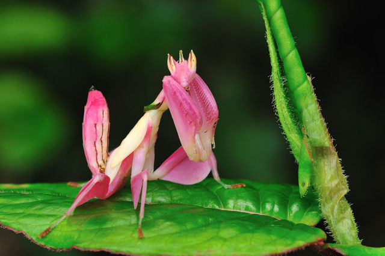
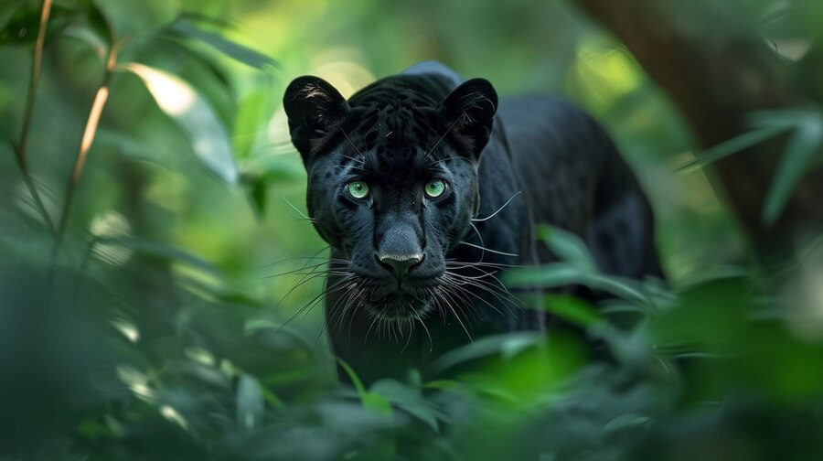
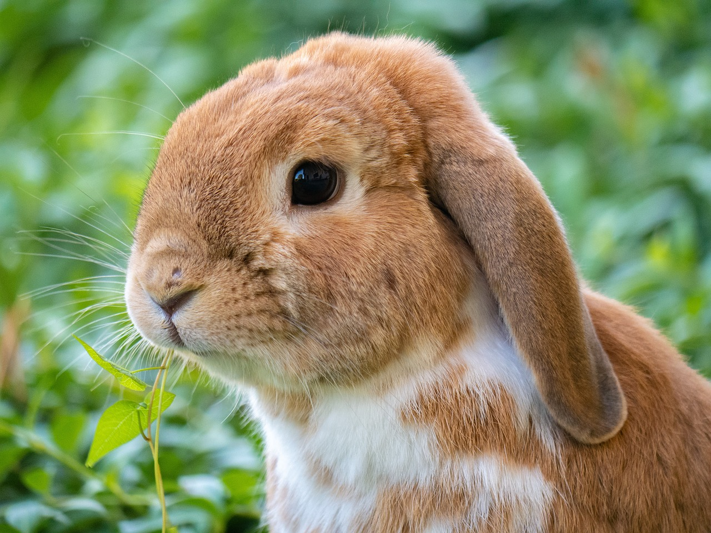
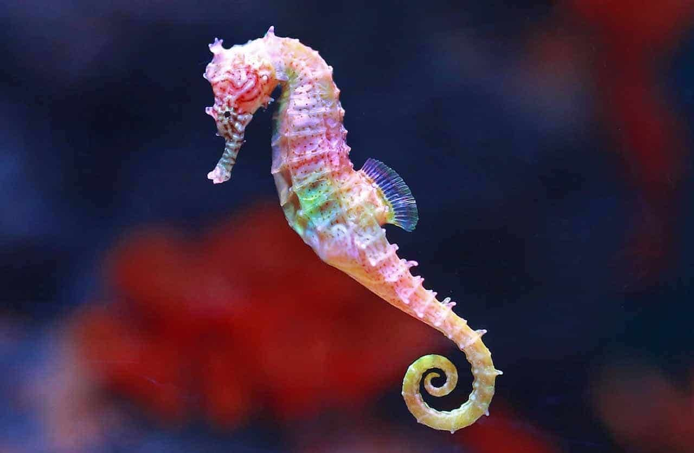
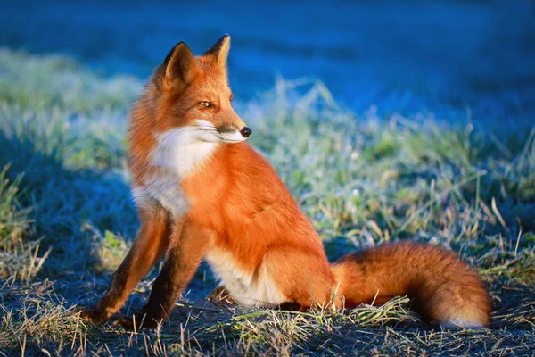
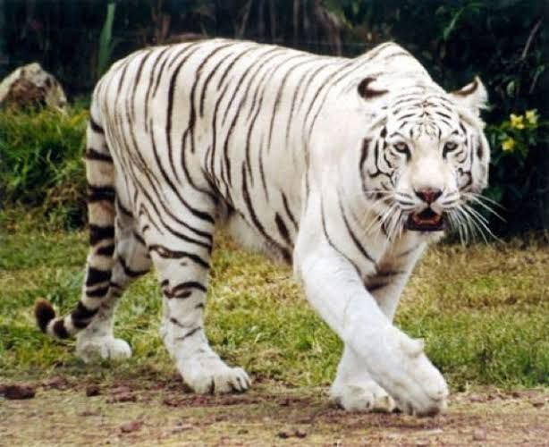
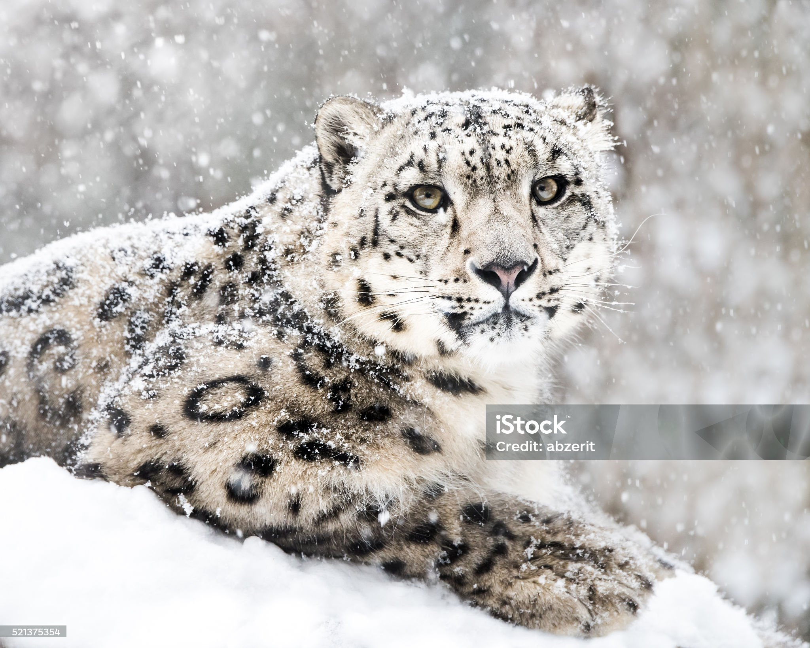

O cisne-negro ou cisne-preto é uma ave aquática australiana, pertencente à família Anatidae, a mesma família dos patos, gansos, e demais cisnes. É a ave oficial do estado da Austrália Ocidental. Podem-se encontrar em todos os estados da Austrália. Na Europa, foi introduzida acidentalmente e tem populações auto-suficientes na Grã-Bretanha, Islândia, Polónia e Países Baixos.
9ª Posição: Louva-a-Deus Orquídea

A louva-a-deus-orquídea é um exemplo incrível de adaptação e camuflagem no reino animal, e sua capacidade de se mimetizar com as flores é um exemplo fascinante da diversidade e complexidade da natureza.
8ª Posição: Pantera Negra

A pantera negra é um termo coloquial usado para se referir a onças e leopardos de cor escura. Estes animais são melanísticos, o que significa que eles têm uma pelagem preta ou grandes aglomerados de manchas pretas contra um pano de fundo de pele escura.
7ª Posição: Mico Leão Dourado
O mico-leão-dourado chama a atenção pela cor vibrante de seus pelos, que varia de dourado a vermelho-dourado. Assim como outros micos e saguis da família Callitrichidae, seu pequeno porte, sua longa cauda e sua agilidade fazem do mico-leão-dourado um dos mais simpáticos animais da nossa fauna.
6ª Posição: Coelho

"Coelho é o nome dado a algumas espécies de mamíferos pertencentes à ordem Lagomorpha e família Leporidae. Apresentam o corpo repleto de pelos, orelhas grandes e membros traseiros longos. São animais herbívoros que podem se alimentar, por exemplo, de gramíneas, cascas de árvores e raízes."
5ª Posição: Cavalo Marinho

O cavalo-marinho com seu formato peculiar e nado vertical pode parecer um peixe incomum. No entanto, mais de 45 espécies habitam águas costeiras em todo o mundo. Muitos conhecimentos foram adquiridos sobre sua biologia básica, porém, ainda permanecem mistérios sobre esses animais carismáticos.
4ª Posição: Raposa

Raposas têm uma aparência que lembra a de um cachorro, destacando-se pelo seu focinho pontiagudo, orelhas eretas e pontudas e uma cauda espessa, a qual se relaciona com equilíbrio e também com o aquecimento do animal. Ratos, lebres, peixes, carniças e frutos são alguns produtos que podem fazer parte da dieta desses animais.
3ª Posição: Tigre de Bengala Branco

O tigre branco não é albino, é um tipo raro de tigre de bengala com um gene recessivo, que pode nascer de dois pais “normais”. Existem outras variações na pelagem do tigre, como listras menos visíveis ou mais próximas, formando manchas largas na pelagem (conhecido como “tigre negro”.
2ª Posição: Panda Vermelho
"O panda-vermelho é um mamífero que, atualmente, está classificado como em perigo de acordo com a Lista Vermelha de Espécies Ameaçadas da IUCN. Esse animal se trata de uma espécie encontrada em climas temperados em regiões de floresta e atualmente ocorre no Butão, China, Índia, Mianmar e Nepal."
1ª Posição: Leopardo das Neves

O leopardo-das-neves é um felino do gênero Panthera que habita as grandes altitudes da Ásia central. Apesar do nome, trata-se de uma espécie diferente do leopardo. Distribui-se principalmente pelo Tibete, Nepal, Índia, Paquistão, Quirguistão, Tajiquistão, Butão e Oeste da china. Pouco se sabe a respeito desse animal, que é arredio e solitário, sendo raramente visto por seres humanos.Em razão disso, os nativos da região chamam-no de "gato-fantasma". Casos de ataques a humanos são quase desconhecidos, por se tratar de uma espécie muito esquiva.